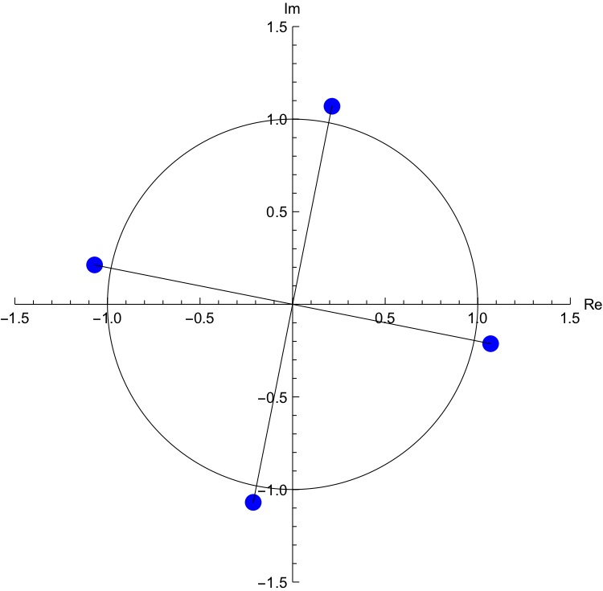
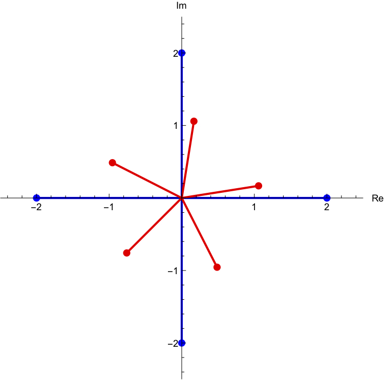

Section 2.9 Complex nth roots of a complex number
¶If \(i^2=-1\text{,}\) does it mean that the square root of \(-1\) is \(i\text{,}\) why not \(-i\text{?}\) Remember in Section 2.4.3 we briefly discussed the freedom we have in Mathemafrica? The definition of the principle (real) square root (Definition 1.3) required \(\sqrt{x} \geq 0\) for \(x \geq 0\text{,}\) so there is no ambiguity when we take the principal square root of, for instance 9, because \(\sqrt{9}=+3\text{.}\) Unfortunately, complex numbers cannot be ordered (see 2.5.6 for details) i.e. they are neither positive nor negative, so the square root of a complex number is ambiguous. We can't have the "positive" complex square root.
Definition 2.9.1. \(n^{th}\) roots of a complex number.
Let \(z,w \in \mathbb{C}\) and \(n \in \mathbb{N}\text{.}\)
We say \(z\) is a (complex) \(n^{th}\) root of \(w\) if:
\(z^n=w\)
As an example you would say that \(\pm 1\) are the complex \(2^{nd}\) roots of 1 because \((\pm 1)^2=1\)
Remark: A special case of this (when \(w=1\)) is solving \(z^n=1\text{,}\) the solutions to this equation are called roots of unity.
So you can ask questions like "what are the sixth roots of \(i\text{?}\)" which means, for which values of \(z\in\mathbb{C}\) does \(z^6=i\)
Let's look at an example. Let's suppose we are interested in finding the cube roots (\(3^{rd}\)) of \(i\text{,}\) what we are really looking for is all the complex numbers which when we cube we get \(i\text{.}\) If we put this into an equation, we are looking for all the values of \(z \in \mathbb{C}\) that satisfy \(z^3=i\text{.}\) Let's solve for \(z\text{:}\)
The first thing we will do EVERY TIME we solve one of these will be to write the complex number whose roots we are looking for in exponential form. In this case we need to put \(i\) in the form \(re^{i\theta}\text{,}\) where \(r\) and \(\theta\) are the modulus and argument of \(i\text{.}\) Well, \(|i|=1\) and \(arg(i)=\frac{\pi}{2}+2\pi k\) where \(k\in \mathbb{Z}\text{,}\) so:
The second thing we do is to write \(z\) in exponential form, where this time of course we don't know the modulus and argument so we just write \(z=re^{i\theta}\) and this gives us:
which can be written as:
Now for the left and right hand sides to be equal (ie two complex numbers be equal to each other) their moduli and arguments have to be the same.
The modulus each side is \(r^3\) on the left hand side and 1 on the right hand side, so we have \(r^3=1\text{,}\) but \(r\) has to be real and positive, and there is only one such number for which this is true....which is just \(r=1\text{.}\) For the arguments, we have \(3\theta\) on the left, and \((\frac{\pi}{2}+2\pi k)\) on the right, so we must have:
where \(k\in\mathbb{R}\)
So the solutions are:
We know that for a second root equation there are two solutions, but here it looks like we have an infinite number of solutions, one for each \(k\text{...}\)but actually this isn't quite true. Let's look at what these numbers are in Cartesian form for different \(k\)
See what happened there at \(k=3\text{.}\) The \(k\) part ended up adding on \(2\pi\) to the argument, and you can take any argument and add on \(2\pi\) and you'll get back to the same place. It just says go around the circle a full turn.
Check yourself that for \(k=4\) you will get back to the \(k=1\) solution, and for \(k=5\) you will get back to the \(k=2\) solution. In fact \(k=0,1,2\) give us all of the solutions.
We can plot the three solutions and they all lie on the unit circle:
See the visual representation of the three cube roots overleaf.
Let's look at another example
Solve \(z^4=1-i\)
Again, we follow these steps:
Write left and right hand side in exponential form
Equate the modulus and argument of both sides
Solve for \(r\) and \(\theta\)
Find the unique arguments (the values of \(k\) for which the complex number is unique). This will always be \(k=0\) to \(k=n-1\) when you are trying to find the \(n^{th}\) roots.
write out the solutions in Cartesian form and plot them in the complex plane.
Let's see:
-
\(1-i=\sqrt{2}e^{i(-\frac{\pi}{4}+2\pi k)}\text{,}\) \(k\in\mathbb{Z}\text{,}\) so:
\begin{equation*} r^4e^{4i\theta}=\sqrt{2}e^{i(-\frac{\pi}{4}+2\pi k)} \end{equation*} -
Equating the modulus:
\begin{equation*} r^4=\sqrt{2}\implies r=2^\frac{1}{8} \end{equation*}Equating the arguments:
\begin{equation*} 4\theta=(-\frac{\pi}{4}+2\pi k)\implies \theta=(-\frac{\pi}{16}+\frac{\pi k}{2}) \end{equation*} -
\begin{equation*} r=2^\frac{1}{8} \end{equation*}
and
\begin{equation*} \theta=(-\frac{\pi}{16}+\frac{\pi k}{2}) \end{equation*} - \begin{equation*} \theta=\left\{-\frac{\pi}{16},\frac{7\pi}{16},\frac{15\pi}{16},\frac{23\pi}{16}\right\} \end{equation*}
-
Plugging these values of \(\theta\) and \(r\) into \(r(\cos\theta+i\sin\theta)\) we get the solutions (up to four decimals):
\begin{equation*} z=\left\{-1.0696 + 0.2127 i, -0.2127 - 1.0696 i, 0.2127 + 1.0696 i, 1.0696 - 0.2127 i\right\} \end{equation*}which in the complex plane look like
Figure 2.9.3. Four fourth roots of \(1-i\) sketched in the complex plane along with the unit circle. The lines joining them to the origin have been put in to illustrate that the difference in arguments is \(\frac{\pi}{2}\text{.}\)
It is a general rule that the \(n\) \(n^{th}\) roots of a complex number will appear all with the same modulus and with equal spacing in terms of the argument. That spacing will always be \(\frac{1}{n}\) of a circle.
Example 2.9.4.
Find all the fourth roots of 16.
Let \(w \in \mathbb{C}\text{,}\) and \(n \in \mathbb{N}\text{.}\) How many (complex) \(n^{th}\) roots does \(w \neq 0\) have? This is a theorem!
-
Find all the values for \(z \in \mathbb{C}\) (and plot them on an Argand diagram) that satisfy the following equations:
\(z^5=1+i\)
-
As before, we are trying to find \(z\) such that:
\begin{equation*} z^4=16 \end{equation*}Write both sides in complex exponential form:
\begin{equation*} r^4e^{4i\theta}=16e^{2\pi i k}\, ,\,\,\, k\in\mathbb{Z} \end{equation*}Matching moduli and arguments we have:
\begin{equation*} r^4=16\implies r=2\, ,\,\,\, 4\theta=2\pi k\implies \theta=\frac{\pi k}{2} \end{equation*}Thus:
\begin{equation*} z=2(\cos\frac{\pi k}{2}+i\sin \frac{\pi k}{2})=\{2,2i,-2,-2i\} \end{equation*}We know that taking \(k=0,1,2,3\) will give us all four solutions. We will plot the solution to this, and questions (c) after that question.
There are always \(n\) \(n^{th}\) roots of \(w\ne 0\text{.}\)
-
As in the first part:
\begin{equation*} z^5=r^5e^{5i\theta}=1+i=\sqrt{2}e^{i\frac{\pi}{4}+2\pi i k} \end{equation*}Matching modulus and argument gives:
\begin{equation*} r=\sqrt{2}^\frac{1}{5}=2^\frac{1}{10}\, ,\,\,\, \theta=\frac{\pi}{20}+\frac{2}{5}\pi k \end{equation*}and we have to take \(k=0,1,2,3,4\text{:}\)
\begin{equation*} z=2^\frac{1}{10}(\cos(\frac{\pi}{20}+\frac{2}{5}\pi k)+i\sin(\frac{\pi}{20}+\frac{2}{5}\pi k))\, ,\,\, k=0,1,2,3,4 \end{equation*}The solutions to this, as well as to part (a) are shown in the following figure:
Figure 2.9.5. The fourth and fifth roots from (a) and (b) above.
Checkpoint 2.9.6.
Find all the fourth roots of an imaginary number \(-81i\) and plot them on an Argand diagram.
Find all the fifth roots of \(\dfrac{1}{2}-i\dfrac{\sqrt{3}}{2}\)
Find all sixth roots of unity and plot them on an Argand diagram.
-
Solve the following equations. List your solutions in modulus-argument form and plot them on an Argand diagram.
\(z^5=-1+\sqrt{3}i\)
\(z^6=-\sqrt{3}-i\)
\(z^5=32i\)
Outcomes: Checklist for this section
I know what it means for a complex number \(z\) to be an \(n^{th}\) of another given complex number \(w\text{.}\)
I can prove that a non-zero complex number has \(n\) distinct \(n^{th}\) roots.
I know how to plot all the \(n^{th}\) roots of a non-zero complex number on an Argand diagram.
I know how to solve equations of the form \(z^n=w\text{,}\) where \(w\) is a given complex number.